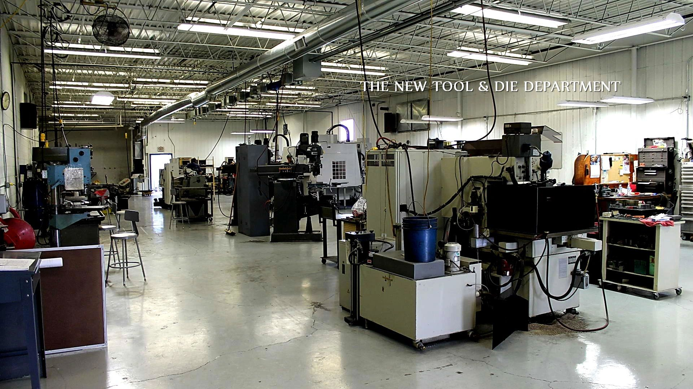

Metals department
Metal manufacturing
From in-house design and tooling to complete fabrication cells — lasers, presses, brakes, CNC, welding, and powder coat — with capacity for long parts and staged inventory.
- Fiber & CO₂ laser cutting
- Turret punch & combo laser
- Press brakes up to 750 tons
- OBI presses to 165 tons
- Metal stamping
- Roll forming (2" & 3" lines)
- CNC machining centers
- TIG, MIG & robotic welding
- Automated tank seam welding
- Powder coating
- Tool & die, jigs & fixtures
- Graphics printing